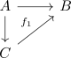
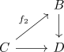
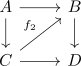

glueing of diagrams commuting up to compatible homotopy
Proposition
Let

and

be diagrams, which commute up to a specified homotopy
Suppose we also have a homotopy from $f_1 \leadsto f_2$
Then
resp.

commute up to compatible homotopy